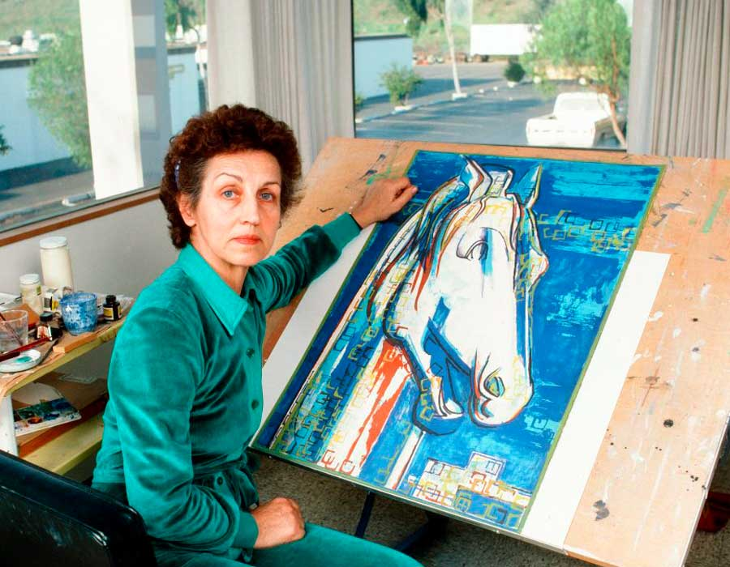

Maria Silva
Maria é diretora criativa da Sentinela DigiArtes, com mais de quinze anos de experiência em design gráfico e artes digitais. Formada em Belas Artes pela USP, ela lidera os projetos pedagógicos com foco em inovação, criatividade e excelência artística. Sua missão é inspirar cada aluno a desenvolver uma linguagem visual própria e autêntica.